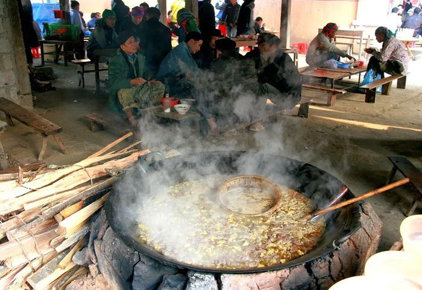
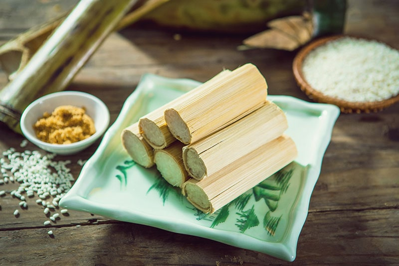
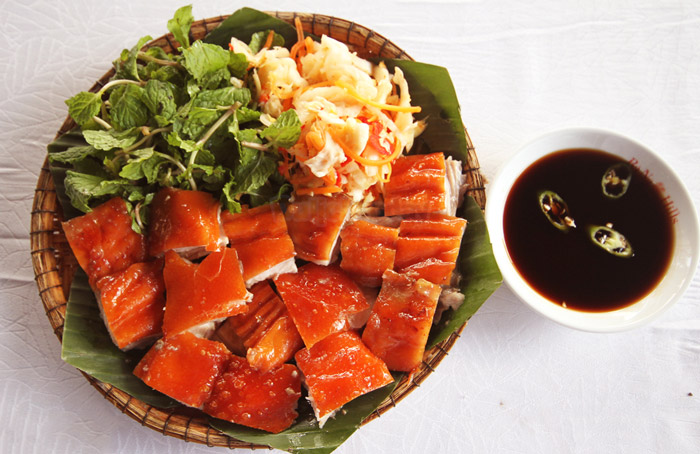
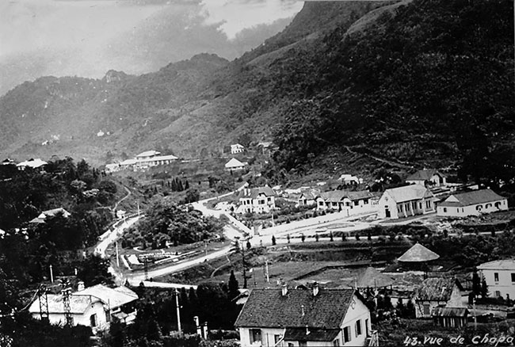
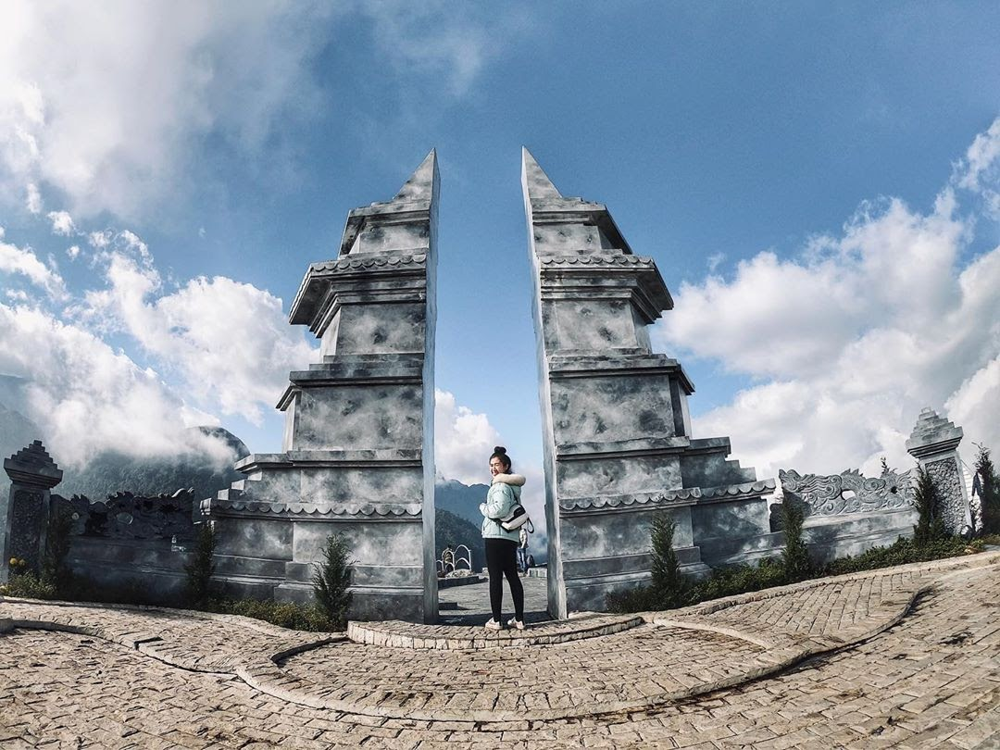

Giới thiệu
Sapa là một danh lam thắng cảnh nằm ở phía tây bắc của Tổ quốc, là một huyện vùng cao của tỉnh Lào Cai. Sa Pa là một điểm du lịch nổi tiếng cảu cả nước. Nằm cách trung tâm thành phố Lào Cai khoảng hơn 30 km. Nằm ở độ cao trung bình 1500 – 1800 m so với mặt nước biển. Sapa luôn chìm trong làn sương mù dầy đặc khiến cho ta có cảm giác bồng bềnh, tạo nên một bức tranh huyền ảo đẹp đến kỳ lạ.Nơi đây, có thứ tài nguyên vô giá. Đó là khí hậu quanh năm trong lành mát mẻ, với nhiệt độ trung bình 15-18°C. gần đây vào mùa đông chúng ta còn có thể ngắm cảnh tuyết rơi bao phủ trắng Sapa.
Ẩm thực
1. Thắng cố
Thắng Cố là món ăn truyền thống của người H’Mông, có nguồn gốc từ vùng núi Hà Giang, phía Đông Bắc và dần được ưa chuộng bởi toàn bộ những người dân tộc thiểu số vùng núi phía Bắc. Người Hà Nội tự hào về phở, người Sài Gòn tự hào về cơm tấm bao nhiêu thì người dân vùng Tây Bắc cũng tự hào bấy nhiêu vì món thắng cố của mình.

2. Cơm lam
Cơm lam đặc biệt phổ biến với đồng bào dân tộc các tỉnh Tây Bắc nước ta, họ thường nấu khi làm nương rẫy. Người dân Sapa cũng thường coi cơm lam là một món đặc sản để đón tiếp khách quý hay sử dụng trong các ngày lễ hội của bản làng.

3. Lợn Cắp Nách
Tại các phiên chợ vùng cao Lào Cai, có thể dễ dàng bắt gặp hình ảnh những người dân địa phương bày bán những con lợn nhỏ có trọng lượng không lớn (dưới 20kg), nên người dân có thể cho vào gùi, xách tay, thậm chí cắp vào nách cho tiện, cái tên lợn “cắp nách” có lẽ bắt nguồn từ đó.Lợn cắp nách thực chất là giống lợn truyền thống được lai giữa lợn rừng và lợn Mường. Một số nơi còn gọi là lợn lửng, lợn còi hay lợn ri. Người dân vùng cao thường nuôi theo kiểu thả rông trong rừng, thịt lợn cắp nách là một trong những đặc sản mà khi đến Sapa du khách nào cũng muốn thử qua một lần.

Lịch sử
Nằm ở độ cao 1.500m trên lừng chừng núi, Sa Pa được biết đến từ năm 1901. Năm 1903, người Pháp cho xây dựng một bốt quân sự. Với khí hậu trong lành, mát mẻ, ngay từ ban đầu, người Pháp đã sớm xác định xây dựng Sa Pa trở thành khu an dưỡng phục vụ những Âu kiều không thích nghi được với khí hậu nhiệt đới.
Các địa điểm văn hóa hay khu vui chơi di tích
1. Bản cát cát
Bản Cát Cát được biết đến là một ngôi làng mang vẻ đẹp của vùng núi Tây Bắc. Ngôi làng này thuộc xã San Sả Hồ, huyện Sapa. Nếu bạn khởi hành từ trung tâm thị trấn Sapa đến cổng của bản chỉ mất khoảng hơn 2km. Ngoài việc di chuyển bằng các phương tiện cá nhân, du khách đến đây cũng có thể đi bộ để ngắm núi rừng, chiêm ngưỡng được toàn bộ vẻ đẹp của bản làng từ trên cao.

2. Cổng trời Sapa
Một trong những nơi nên đi ở Sapa tiếp theo đó chính là Cổng trời. Cổng trời Sapa là địa điểm du lịch rất nổi tiếng tọa lạc trên đỉnh đèo Ô Quy Hồ có độ cao 2035m so với mực nước biển. Cổng trời cách thị trấn Sapa 18km. Du khách muốn đến được đây phải vượt qua đèo Ô Quy Hồ với quãng đường lên tới 50 km. Tuy vậy, nơi này vẫn luôn được đông đảo khách du lịch đến tham quan, đặc biệt là các bạn trẻ muốn trải nghiệm, khám phá.

3. Nhà thờ cổ
Nhà thờ cổ Sapa - một trong những địa điểm nên đi ở Sapa dành cho cho các bạn trẻ. Đây được xem là một biểu tượng của thành phố sương mờ mà ai cũng đều muốn được đặt chân đến một lần trong đời.Nhà thờ cổ Sapa nằm trên một vị trí khá ấn tượng. Phía sau là núi Hàm Rồng, phía trước là khu đất rộng - nơi có thể xây dựng nhiều công trình văn hóa để phục vụ cho các hoạt động xã hội.
Review khách sạn và homestay
1. Boutique Hotel & Spa
Nằm tại thị trấn Sa Pa, cách trạm cáp treo Fansipan Legend 3,7 km, My Boutique Hotel & Spa cung cấp chỗ nghỉ có nhà hàng, chỗ đỗ xe riêng miễn phí và sảnh khách chung. Chỗ nghỉ này có các phòng gia đình và sân hiên tắm nắng. Chỗ nghỉ cũng có lễ tân 24 giờ, dịch vụ phòng và dịch vụ thu đổi ngoại tệ cho khách.Tất cả phòng nghỉ tại đây đều được trang bị máy điều hòa, TV truyền hình vệ tinh màn hình phẳng, tủ lạnh, ấm đun nước, chậu rửa vệ sinh (bidet), máy sấy tóc và bàn làm việc. Các phòng còn có phòng tắm riêng với vòi sen cùng đồ vệ sinh cá nhân miễn phí và WiFi miễn phí. Tại My Boutique Hotel & Spa, các phòng cũng được bố trí khu vực ghế ngồi.Khách nghỉ tại đây có thể thưởng thức bữa sáng kiểu lục địa hoặc tự chọn.Đạp xe là hoạt động phổ biến trong khu vực. My Boutique Hotel & Spa cũng cho thuê xe máy.
2. Fansipan Terrace Cafe and Homestay
Nằm cách Ga cáp treo Fansipan Legend 3,1 km, Fansipan Terrace Cafe and Homestay cung cấp nhà hàng, quán bar, chỗ nghỉ lắp máy điều hòa có ban công và Wi-Fi miễn phí.Chỗ nghỉ phục vụ bữa sáng kiểu lục địa hàng ngày.Fansipan Terrace Cafe and Homestay còn có sân hiên.Quý khách nghỉ tại đây có thể đi xe đạp gần đó hoặc thư giãn trong vườn.Các điểm tham quan nổi tiếng gần Fansipan Terrace Cafe and Homestay bao gồm trung tâm thương mại Sun Plaza, Hồ Sa Pa và Quảng trường Trung tâm Sa Pa.
3. KK Sapa Hotel
Tọa lạc tại thị xã Sa Pa, cách ga cáp treo Fansipan Legend 3,8 km, KK Sapa Hotel cung cấp chỗ nghỉ với nhà hàng, chỗ đỗ xe riêng miễn phí, quầy bar và sảnh khách chung. Khách sạn này cũng có hồ bơi trong nhà và dịch vụ cho thuê xe hơi. Chỗ nghỉ cũng cung cấp dịch vụ lễ tân 24 giờ, dịch vụ phòng và dịch vụ thu đổi ngoại tệ cho khách.Tất cả phòng nghỉ tại đây đều được trang bị máy điều hòa, TV màn hình phẳng với truyền hình cáp, tủ lạnh, ấm đun nước, vòi sen, máy sấy tóc và bàn làm việc. Ngoài ra, phòng còn có tủ để quần áo và phòng tắm riêng.KK Sapa Hotel phục vụ bữa sáng kiểu lục địa hoặc tự chọn.Chỗ nghỉ có sân hiên.Các điểm tham quan nổi tiếng gần khách sạn bao gồm trung tâm thương mại Sun Plaza, Hồ Sa Pa và Quảng trường Trung tâm Sa Pa.